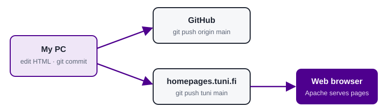

About this diary
This diary collects the topics I study during the Orientation to ICT Engineering Studies course at TAMK. I add new pages as the course goes on.
Entries
| Version | Topic | Page |
|---|---|---|
| WLD 0.1 | Basic HTML page, applying for user rights in id.tuni.fi, Git, publishing to homepages.tuni.fi (Apache web server) | This page |
| WLP | Core Tuni IT systems | it.html |
| WLP | Core TAMK study information | study.html |
| WLP | Excel | excel.html |
How this site is published
